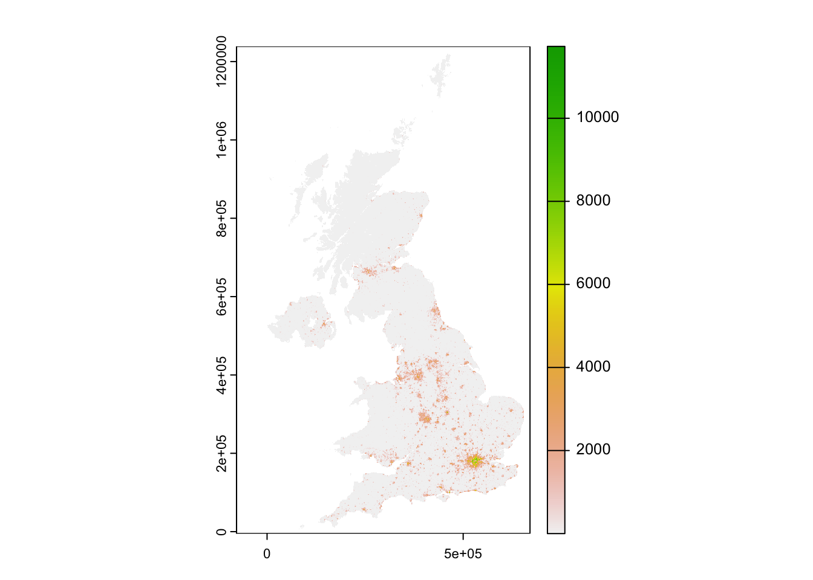
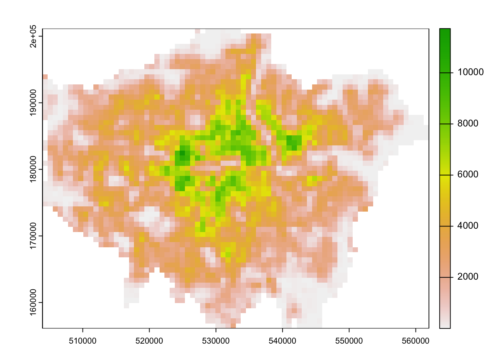

9 Rasters, Zonal Statistics, and Interpolation
The majority of our module has focused on the use of vector data and tabular data. This week, we switch it up by focusing primarily on raster data and its analysis using map algebra and zonal statistics.
9.1 Lecture slides
The slides for this week’s lecture can be downloaded here: [Link]
9.2 Reading list
Essential readings
- Gimond, M. 2021. Intro to GIS and spatial analysis. Chapter 14: Spatial Interpolation. [Link]
- Heris, M., Foks, N., Bagstad, K. 2020. A rasterized building footprint dataset for the United States. Scientific Data 7: 207. [Link]
- Thomson, D., Leasure, D., Bird, T. et al. 2022. How accurate are WorldPop-Global-Unconstrained gridded population data at the cell-level? A simulation analysis in urban Namibia. Plos ONE 17:7: e0271504. [Link]
Suggested readings
- Mellander, C., Lobo, J., Stolarick, K. et al. 2015. Night-time light data: a good proxy measure for economic activity? PLoS ONE 10(10): e0139779. [Link]
9.3 Raster data
In previous weeks, we have predominantly worked with vector data and/or tabular data that we then join to vector data for analysis. However, depending on the nature of your research problem, you may also encounter raster data. This week’s content introduces you to raster data, map algebra and interpolation. After first looking at population change in London using raster data, we will then look at generating pollution maps in London from individual point readings taken from air quality monitoring sites across London. To complete this analysis, we will be using several new datasets:
- Population rasters for Great Britain: WorldPop raster on estimated population counts for Great Britain in 2010 and 2020 at a spatial resolution of 1km.
- NO2 readings across London: A dataset contain readings of NO2 for individual air quality monitoring sites in London.
The main difference between vector and raster models is how they are structured. Our vectors are represented by three different types of geometries: points, lines and polygons. We have used point data in the form of our stations and bike theft, and polygons in the form of our ward and borough boundaries. In comparison, our raster datasets are composed of pixels (or grid cells) — a bit like an image. This means that a raster dataset represents a geographic phenomenon by dividing the world into a set of rectangular cells that are laid out in a grid. Each cell holds one value that represents the value of that phenomena at the location, e.g. a population density at that grid cell location. In comparison to vector data, we do not have an attribute table containing fields to analyse. All analysis conducted on a raster dataset therefore is primarily conducted on the cell values of a raster, rather than on the attribute values of the observations contained within our dataset or the precise geometries of our dataset. Probably one of the most common or well-known types of raster data are those that we can derive from remote sensing, including satellite and RADAR/LIDAR imagery that we see used in many environmental modelling applications, such as land use and pollution monitoring.
9.3.1 Getting started
Open a new script within your GEOG0030 project and save this script as wk9-raster-analysis.r. At the top of your script, add the following metadata:
R code
# Raster analysis
# Date: January 2024Now let us add all of the libraries we will be using today to the top of our script:
R code
# load libraries
library(tidyverse)
library(sf)
library(tmap)
library(terra)
library(openair)
library(gstat)For the first part of this week’s practical material we will be using raster datasets from WorldPop:
“WorldPop develops peer-reviewed research and methods for the construction of open and high-resolution geospatial data on population distributions, demographics and dynamics, with a focus on low and middle income countries.”
These population surfaces are estimates of counts of people, displayed within a regular grid raster of a spatial resolution of up to 100m. These surfaces can be used to explore, for example, changes in the demographic profiles of small areas, area deprivation, or country of birth.
- Navigate to the WorldPop Hub: [Link]
- Go to Population Count -> Unconstrained individual countries 2000-2020 (1km resolution).
- Type United Kingdom in the search bar.
- Download the GeoTIFF files for 2010 and 2020:
gbr_ppp_2010_1km_Aggregatedandgbr_ppp_2020_1km_Aggregated. - Save the files in your
populationfolder.
9.4 Map algebra
Map algebra is a set-based algebra for manipulating geographic data, coined by Dana Tomlin in the early 1980s. Map algebra uses maths-like operations, including addition, subtraction and multiplication to update raster cell values. The most common type of map algebra is to apply these operations using a cell-by-cell function. These operations might include:
- Arithmetic operations that use basic mathematical functions like addition, subtraction, multiplication and division.
- Statistical operations that use statistical operations such as minimum, maximum, average and median.
- Relational operations which compare cells using functions such as greater than, smaller than or equal to.
The utilisation of these functions can enable many different types of specialised raster analysis, such as recoding or reclassifying individual rasters to reduce complexity in their data values, generating the Normalised Difference Vegetation Index for a satellite imagery dataset or calculating Least Cost Surfaces to find the most efficient path from one cell in a raster to another. Furthermore, using multiple raster datasets, it is possible to combine these data through mathematical overlays, from the basic mathematical operations mentioned above to more complex modelling..
We will be using some simple map algebra to look at population change in London between 2010 and 2020. Let’s get started and take a look at our data. We can load raster data into R using the terra library:
R code
# load data
pop2010 <- rast("data/raw/population/gbr_ppp_2010_1km_Aggregated.tif")
pop2020 <- rast("data/raw/population/gbr_ppp_2020_1km_Aggregated.tif")
# transform projection
pop2010 <- pop2010 |>
project("epsg:27700")
pop2020 <- pop2020 |>
project("epsg:27700")R code
# plot 2010
plot(pop2010)
R code
# plot 2020
plot(pop2020)You should see that whilst your maps look very similar, the legend certainly shows that the values associated with each cell has grown over the 10 years between 2010 and 2021: we see our maximum increase from about 12,000 people per cell to well-over 14,000 people per cell. Now we have our raster data loaded, we want to reduce it to show only the extent of London.
The terra package does not take in sf objects, so once we have loaded the London MSOA file we need to transform the file into a SpatRaster or SpatVector. The process of turning a vector dataset into a raster dataset is called rasterising.

R code
# load data, get outline, rasterise
msoa_london <- st_read("data/raw/boundaries/MSOA2021_London.gpkg") |>
vect()Reading layer `MSOA2021_London' from data source
`/Users/justinvandijk/Library/CloudStorage/Dropbox/UCL/Web/jtvandijk.github.io/GEOG0030_23_24/data/raw/boundaries/MSOA2021_London.gpkg'
using driver `GPKG'
Simple feature collection with 1002 features and 4 fields
Geometry type: MULTIPOLYGON
Dimension: XY
Bounding box: xmin: 503574.2 ymin: 155850.8 xmax: 561956.7 ymax: 200933.6
Projected CRS: OSGB36 / British National Grid# crop
pop2010_london <- crop(pop2010, msoa_london)
pop2020_london <- crop(pop2020, msoa_london)
# mask
pop2010_london <- mask(pop2010_london, msoa_london)
pop2020_london <- mask(pop2020_london, msoa_london)R code
# plot 2010
plot(pop2010_london)
R code
# plot 2020
plot(pop2020_london)
Now we have our two London population rasters, we can calculate population change between the two time periods by subtracting our 2010 population raster from our 2020 population raster:
R code
# subtract
lonpop_change <- pop2020_london - pop2010_london
# plot
plot(lonpop_change)
9.5 Zonal statistics
To further analyse our population change raster, we can create a smoothed version of our lonpop_change raster by using the focal() function. Using the focal() function, we generate a raster that summarises the average (mean) value of the 9 nearest neighbours for each cell, using a weight matrix defined in our w parameter and set to a matrix:
R code
# subtract
lonpop_smooth <- focal(lonpop_change, w = matrix(1, 3, 3), fun = mean)
# plot
plot(lonpop_change)The differences are not very noticeable, but you were to subtract the smoothed raster from the original raster you will see that definitely something happened:
R code
# plot the results
plot(lonpop_change - lonpop_smooth)
We can also look to use zonal functions to better represent our population change by aggregating our data to coarser resolutions. For example, we can resize our raster’s spatial resolution to contain larger grid cells which will, of course, simplify our data, making larger trends more visible in our data but may similarly end up obfuscating smaller trends.
We can resize our lonpop_change raster by using the aggregate() function and setting the fact (factor) parameter to the order of rescaling we would like (e.g. increase both the width and height of a cell by a factor of two). We then provide the fun (function) by which to aggregate our data, in this case, we will continue to use the mean but we could also use the min or max depending on our application.
R code
# aggregate
lonpop_agg <- aggregate(lonpop_change, fact = 2, fun = mean)
# plot
plot(lonpop_agg)
Where we transformed a vector dataset into a raster dataset earlier, in some cases you would want to aggregate move from raster to vector. For example, in our case, we can aggregate the lonpop_change raster to our actual London MSOA boundaries, i.e. calculate for each MSOA in our dataset the average (or other function) population change,. We can, of course, use other functions other than the mean. What function you use will simply depend on your application.
# aggregate
london_msoa_pop <- extract(lonpop_change, msoa_london, fun = mean)
# add to spatial dataframe
msoa_london <- msoa_london |>
st_as_sf() |>
mutate(pop_change = london_msoa_pop$gbr_ppp_2020_1km_Aggregated)
# plot
tm_shape(msoa_london) +
tm_fill(
col = "pop_change"
)Variable(s) "pop_change" contains positive and negative values, so midpoint is set to 0. Set midpoint = NA to show the full spectrum of the color palette.
We now have a vector dataset that we could go ahead and run many of the analyses that we have completed in previous weeks. Furthermore, we can use this data within other analyses we might want to complete.
Trying to calculate population change, particularly across decades as we have done here, can be quite challenging with changing administrative boundaries. Using raster data can be a good workaround to these issues, provided that the different rasters are of same size and extent.
9.6 Interpolation
For the second part of this week’s practical material, we will explore several methods of spatial data interpolation by looking at air pollution in London using Londonair data. Londonair is the website of the London Air Quality Network (LAQN), and shows air pollution in London and southeast England that is provided by the Environmental Research Group of Imperial College London. The data are publicly available for download and we can use an R package to directly interact with the data without needing to download it. The openair R package enables us to import data directly from the Londonair website. We will focus on Nitrogen Dioxide (NO2) measurements.
Spatial interpolation is the prediction of a given phenomenon in unmeasured locations. There are many reasons why we may wish to interpolate point data across a map. It could be because we are trying to predict a variable across space, including in areas where there are little to no data.
R code
# get list of all measurement sites operated by Imperial College
# limit to sites with data for 2022
site_meta <- importMeta(source = "kcl", all = TRUE, year = 2022:2022)
# download all data pertaining to these sites
pollution <- importKCL(site = c(site_meta$code), year = 2022:2022, pollutant = "no2", meta = TRUE)This second part of the code might take some time to run as it will try to download the data for all sites for an entire year — and in many cases data is measured hourly. Despite us limiting our data download, not all measurements sites collect data on NO2 so you will get some warnings along the lines of 404 Not Found. In case you run into too many errors or it is just taking too long, you can download a copy of the data here: [Download]. Once downloaded, copy over the zip and put this into a data/raw/pollution folder. The file is rather large, so you can leave it unzipped.
Let’s inspect the data:
R code
# load from zip if not downloaded through the Open Air library
pollution <- read_csv("data/raw/pollution/london_no2_2022.zip")Multiple files in zip: reading 'london_no2_2022.csv'
Rows: 1624324 Columns: 8
── Column specification ────────────────────────────────────────────────────────
Delimiter: ","
chr (4): site, code, source, site_type
dbl (3): no2, latitude, longitude
dttm (1): date
ℹ Use `spec()` to retrieve the full column specification for this data.
ℹ Specify the column types or set `show_col_types = FALSE` to quiet this message.# inspect
head(pollution)# A tibble: 6 × 8
date no2 site code source latitude longitude site_type
<dttm> <dbl> <chr> <chr> <chr> <dbl> <dbl> <chr>
1 2022-01-01 00:00:00 NA City of L… CTA kcl 51.5 -0.0921 Roadside
2 2022-01-01 01:00:00 NA City of L… CTA kcl 51.5 -0.0921 Roadside
3 2022-01-01 02:00:00 NA City of L… CTA kcl 51.5 -0.0921 Roadside
4 2022-01-01 03:00:00 NA City of L… CTA kcl 51.5 -0.0921 Roadside
5 2022-01-01 04:00:00 NA City of L… CTA kcl 51.5 -0.0921 Roadside
6 2022-01-01 05:00:00 NA City of L… CTA kcl 51.5 -0.0921 Roadside We can see that in our first five rows we have data for the same site and if we look at the date field, we can see we have a reading observation for every hour. With 24 hours in the day, 365 days in a year and hundreds of sites, it should therefore be of no surprise that we have such a large csv. Let’s summarise the values by site to make the dataset a bit more workable:
R code
# calculate mean no2 values
pollution_avg <- pollution |>
filter(!is.na(latitude) & !is.na(no2)) |>
group_by(code, latitude, longitude) |>
summarise(no2 = mean(no2))`summarise()` has grouped output by 'code', 'latitude'. You can override using
the `.groups` argument.# inspect
head(pollution_avg)# A tibble: 6 × 4
# Groups: code, latitude [6]
code latitude longitude no2
<chr> <dbl> <dbl> <dbl>
1 AH0 49.8 -7.56 1.82
2 BE1 54.6 -5.93 5.05
3 BG1 51.6 0.178 16.8
4 BG2 51.5 0.133 20.6
5 BH0 50.8 -0.148 11.6
6 BK0 53.8 -3.01 6.11We are now left with only 45 measurement sites — with only the latitudes, longitudes, and the average NO2 values associated with each. When using interpolation, the distribution and density of our data points will impact the accuracy of our final raster and we may end up with a level of uncertainty in the areas where measurements are more sparse. Let’s have a look at the spatial distribution of the measurement sites.
# load MSOAs for reference
msoa_london <- st_read("data/raw/boundaries/MSOA2021_London.gpkg") |>
st_union()Reading layer `MSOA2021_London' from data source
`/Users/justinvandijk/Library/CloudStorage/Dropbox/UCL/Web/jtvandijk.github.io/GEOG0030_23_24/data/raw/boundaries/MSOA2021_London.gpkg'
using driver `GPKG'
Simple feature collection with 1002 features and 4 fields
Geometry type: MULTIPOLYGON
Dimension: XY
Bounding box: xmin: 503574.2 ymin: 155850.8 xmax: 561956.7 ymax: 200933.6
Projected CRS: OSGB36 / British National Grid# create a point spatial dataframe
measurement_sites <- pollution_avg |>
st_as_sf(coords = c("longitude", "latitude"), crs = 4326) |>
st_transform(27700)
# ensure all points within London
measurement_sites <- measurement_sites |>
st_intersection(msoa_london)Warning: attribute variables are assumed to be spatially constant throughout
all geometries# add London outline
tm_shape(msoa_london) +
tm_polygons(
col = "grey"
) +
# add measurement sites
tm_shape(measurement_sites) +
tm_dots()Let’s also have a look whether measurements differ across London:
# add London outline
tm_shape(msoa_london) +
tm_polygons(
cols = "grey"
) +
# add proportional symbol
tm_shape(measurement_sites) +
tm_bubbles(
size = "no2",
col = "blue",
style = "pretty",
border.col = "white",
title.size = "Average NO2 ug/m3 reading in 2022"
) +
# add legend
tm_layout(
legend.position = c("left", "top")
) +
# add north arrow
tm_compass(
type = "arrow",
position = c("right", "top")
) +
# add scale bar
tm_scale_bar(
breaks = c(0, 5, 10, 15, 20),
position = c("left", "bottom")
) +
# add credits
tm_credits("NO~2~ measurements from London Air (2022).")Our proportional symbols shows that there is some heterogeneity in NO2 measurements across London — both in terms of coverage and in terms of NO2 levels. This means that if we want to make a reasonable assumptions about NO2 levels in an area where no measurement was taking, we need to interpolate the missing values.
Thiessen polygons
The first step we can take to interpolate the data across space is to create Thiessen polygons. Thiessen polygons are formed to assign boundaries of the areas closest to each unique point. Therefore, for every point in a dataset, it has a corresponding Thiessen polygon.
Besides Thiessen you may also come across the term Voronoi polygons. Both terms are used interchangeably to describe this type of geometry created from point data. In the field of GIS we tend to refer to them as Thiessen polygons, but in other fields they are often referred to as Voronoi diagrams, in honour of the mathematician Georgy Voronoy.
We can create Thiessen polygons using the sf library with a bit of code: we will create a simple function called st_thiessen_point() that we can use to generate Thiessen polygons directly from a point dataset.
Do not worry about fully understanding the code behind the function, but simply understand what input (a point spatial dataframe) and output (a Thiessen polygon spatial dataframe) it will provide.
R code
# function
st_thiessen_point <- function(points) {
# input check
if (!all(st_geometry_type(points) == "POINT")) {
stop("Input not POINT geometries")
}
# to multipoint
g = st_combine(st_geometry(points))
# to thiessen
v = st_voronoi(g)
v = st_collection_extract(v)
# return
return(v[unlist(st_intersects(points, v))])
}
# call function
measurement_sites_thiessen <- st_thiessen_point(measurement_sites)
# force thiessen polygons to measurement sites dataframe
measurement_sites_thiessen_df <- measurement_sites |>
st_set_geometry(measurement_sites_thiessen) |>
st_intersection(msoa_london)Warning: attribute variables are assumed to be spatially constant throughout
all geometries# inspect
measurement_sites_thiessen_dfSimple feature collection with 103 features and 2 fields
Geometry type: GEOMETRY
Dimension: XY
Bounding box: xmin: 503574.2 ymin: 155850.8 xmax: 561956.7 ymax: 200933.6
Projected CRS: OSGB36 / British National Grid
# A tibble: 103 × 3
code no2 geometry
* <chr> <dbl> <GEOMETRY [m]>
1 BG1 16.8 POLYGON ((547785.5 187913.4, 557897 187404.3, 550800.7 184315.1,…
2 BG2 20.6 MULTIPOLYGON (((543729.1 183422.7, 543923.7 183583, 543960.2 183…
3 BL0 25.7 POLYGON ((529120.3 182395, 529101.2 184092.5, 531261 183754.7, 5…
4 BQ7 16.1 MULTIPOLYGON (((546347 181055.1, 546593.8 181106.4, 546697.1 181…
5 BT4 43.1 POLYGON ((516082 187365.6, 520958.9 189405.3, 521236.1 184358.2,…
6 BT5 28.0 POLYGON ((523877.3 190896.9, 524273.2 190424, 525686.9 187185.8,…
7 BT6 27.7 POLYGON ((522237.8 181852.6, 519969.8 183532.7, 519912.6 183741.…
8 BT8 28.5 POLYGON ((522982.8 184472, 525686.9 187185.8, 526408.6 186420, 5…
9 BX1 17.6 MULTIPOLYGON (((550063.2 169311.6, 550099.6 169246.6, 550115.1 1…
10 BX2 15.9 MULTIPOLYGON (((548349.8 175998.9, 549623.4 180763, 550028.2 180…
# ℹ 93 more rowsWe can now visualise these Thiessen polygons with their associated NO2 value:
# add thiessen polygons
tm_shape(measurement_sites_thiessen_df) +
tm_polygons(
col = "no2",
palette = "Blues"
) +
# add legend
tm_layout(
legend.show = TRUE
)And that’s it! We now have our values interpolated using our Thiessen polygon approach. However, as you can see, our approach is quite coarse. Whilst we, of course, can see areas of high and low pollution, it really does not offer us as much spatial detail as we would like, particularly when we know there are better methods out there to use.
Inverse Distance Weighting
A second method to interpolate point data is Inverse Distance Weighting (IDW). An IDW is a means of converting point data of numerical values into a continuous surface to visualise how the data may be distributed across space. The technique interpolates point data by using a weighted average of a variable from nearby points to predict the value of that variable for each location. The weighting of the points is determined by their inverse distances, essentially drawing on Tobler’s first law of geography.
The distance weighting is done by a power function: the larger the power coefficient, the stronger the weight of nearby point. The output is most commonly represented as a raster surface.
We will start by generating an empty grid to store the predicted values before executing a simple the IDW.
R code
# create regular output grid from London outline
output_grid <- msoa_london |>
st_make_grid(cellsize = c(500, 500))
# execute IDW
measurement_sites_idw <- idw(formula = no2 ~ 1, locations = measurement_sites, newdata = output_grid,
beta = 2)[inverse distance weighted interpolation]# clip to London outline
measurement_sites_idw <- measurement_sites_idw |>
st_intersection(msoa_london)Warning: attribute variables are assumed to be spatially constant throughout
all geometriesWe now have our final predicted raster surface. To map it, we can again use the tmap as we have done previously. For our polygon raster, the name of the layer we need to provide is var1.pred.
# add idw grid
tm_shape(measurement_sites_idw) +
tm_fill(
col = "var1.pred",
style = "quantile",
n = 100,
palette = "Reds",
legend.show = FALSE
) +
# add measurement sites
tm_shape(measurement_sites) +
tm_dots()We have used an output cell size of 500x500 metres. A smaller cell size will create a smoother IDW output, but it does add uncertainty to these estimates as we do not exactly have a substantial amount of data points to interpolate from. Keep in mind: reducing the cell size will also exponentially increase processing time.
9.7 Assignment
For your final assignment this week, we want you to redo the IDW interpolation of the London pollution data for the months of June and December and see to what extent there are differences between these months. In order to do this you will, at least, need to:
- Create monthly averages for the pollution data. This will involve some data wrangling.
- For both the months of June and December create a spatial dataframe containing the London monitoring sites and their average NO2 reading.
- Conduct an Inverse Distance Weighting interpolation for both months of data.
- Combine the results to identify areas that might differ.
9.8 Want more? [Optional]
More raster
A raster dataset often only contains one layer, i.e. one variable. Hence when we want to map a raster, we use the tm_raster() and provide the layer name for mapping. However, satellite imagery, for instance, consists of three bands: a band with a red value, a band with a green value and a band with a blue value. This is known as multi-band imagery. We can visualise each band independently of one another, however, you would see that you end up with either a nearly all red, green or blue image. If you are interested to learn more about using satellite imagery with R and raster analysis in general, this is a good place to start. Alternatively, if you are interested in more advanced interpolation methods, Manual Gimond’s tutorial on spatial data interpolation or Paula Moraga’s online book on Spatial Statistics for Data Science: Theory and Practice with R (particularly Chapters 12-16) will get you started.
9.9 Before you leave
This week, we’ve looked at raster datasets and how we use the terra library to manage and process them. Specifically, we looked at using map algebra to apply mathematical operations to rasters. We further looked at two different interpolation methods to generate raster data from point data. Understanding how to interpolate data correctly is incredibly important. Whilst in most instances you will be working with vector data, especially where government statistics and administrative boundaries are involved, there are also plenty of use cases in which you will need to generate raster data from point data, as we have done today. With that being said: that is it for our penultimate week. Suppose nothing left to do besides checking out that reading?